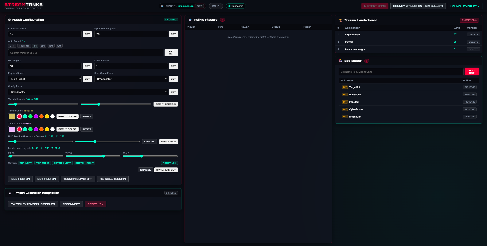

Everything you need to broadcast StreamTanks: single-binary installation, transparent OBS Studio configuration, channel claim authorization, and complete game administration via the Commander Admin Console.
StreamTanks compiles into a single, self-contained executable with embedded SQLite and embedded web assets. Zero external dependencies or Node.js runtime required.
Grab the latest release archive for your operating system from the Releases page:
Extract the zip into a folder of your choice (e.g. C:\StreamTanks\ on Windows or ~/StreamTanks/ on Linux/macOS).
Start StreamTanks on your machine. No configuration files required to start:
# Double-click StreamTanks.exe, or run in terminal:
.\StreamTanks.exechmod +x StreamTanks
./StreamTanks-addr :8102 — Customize the local HTTP/WebSocket port (default: :8102).-channel <name> — Set the target Twitch channel directly via terminal flag.-debug — Launches in local offline testing mode with an on-screen debug command bar and target practice bot.Want to test aiming, crater deformation, and tank physics without going live on Twitch? Launch with -debug:
.\StreamTanks.exe -debugStreamTanks serves a transparent, high-performance 1920x1080 HTML5 canvas overlay directly over local HTTP. Your webcam and stream game show through cleanly behind the neon battlefield.
Follow these steps in OBS Studio to add the overlay to your stream scene:
StreamTanks and configure the properties:
http://localhost:810219201080The overlay automatically detects server restarts or disconnects. If the game server restarts, the overlay becomes 100% transparent so your stream never shows an ugly "connection failed" browser error, and automatically reloads once the server is back online!
Connect the local game engine to your Twitch channel so chat commands and viewers are automatically routed to your battlefield.
The easiest way to connect your channel is through the built-in Commander Admin Console:
http://localhost:8102/admin in your web browser (or dock it inside OBS Studio as a Custom Browser Dock).mrpoundsign) and click Save. You will receive a unique one-time claim command (e.g. %claim PU5HZX).%claim <CODE> command into your Twitch chat as the streamer to link and authorize your channel!Once verified, StreamTanks securely saves your host authorization token and channel in the embedded SQLite database so you never have to re-enter or re-authorize it on future launches.
# Type in your channel chat as the streamer:
%claim PU5HZX
StreamTanks includes a dedicated web dashboard accessible at http://localhost:8102/admin. Control every aspect of your game without typing in Twitch chat.
Monitor current round phase (IDLE, INPUT, ACTION, WINNER), remaining countdown timer, active player count, and connected OBS overlays in real time.
Buttons to instantly trigger matches, toggle bouncy walls, toggle idle HUD, re-roll procedural terrain, and clear leaderboards.
Freely reposition and resize the stream leaderboard overlay with real-time X/Y sliders (0–1920 / 0–1080) and scale factor (0.5x–2.0x), plus one-click corner presets (Top-Left, Top-Right, Bottom-Left, Bottom-Right).
Dedicated Bot Manager card to add and remove custom bot names from SQLite, toggle auto-fill bots, and configure point bounties for bot eliminations.
Inspect all-time player rankings, delete individual records, or clear the entire leaderboard database with one click.
Customize neon terrain and tank tread glow colors with presets or hex codes, toggle steep terrain climbing restrictions, adjust simulation speeds, and configure round timers.
View live players, their chosen emote crowns, and health. Kick disruptive players with one click directly from the dashboard table.
Full-featured in-browser CLI with command history (Up/Down arrow keys) and quick-action suggestion pills.
Add http://localhost:8102/admin under Docks > Custom Browser Docks in OBS Studio for seamless one-click controls during your stream!

StreamTanks provides quick chat triggers for live match flow, while centralizing all game customization inside the visual Commander Admin Console.
To keep your Twitch chat clean and prevent accidental or unauthorized command clutter, all settings that previously required chat commands (e.g. %roundtime, %bouncywalls, %terraincolor, %botfill, and %clearleaderboard) are now configured exclusively in the visual Commander Admin Console (http://localhost:8102/admin). Streamers and mods only need chat commands for starting matches and moderating players.
| Setting / Trigger | Interface | Role | Description & Admin Console Location | Action |
|---|---|---|---|---|
%startgame |
Twitch Chat | Streamer | Starts an artillery match from the IDLE waiting phase. (Streamer by default; permission configurable in Admin Console). Alias: %start. |
|
%kick |
Twitch Chat | Streamer/Mod | Immediately removes a player from the active match, despawning their tank and projectiles. Usage: %kick <username>. (Also available via 1-click Kick button in Admin Console). |
|
Round Timer |
Admin Console | Streamer/Mod | Configures the input phase countdown duration (range: 5s to 120s, default: 20s). Located in Match Rules & Timers (formerly %roundtime). |
Slider 5–120s |
Auto-Round |
Admin Console | Streamer/Mod | Automates round starts: immediate continuous matches, scheduled interval in minutes, or disabled. Located in Match Rules & Timers (formerly %autoround). |
Select / Input |
Idle HUD Toggle |
Admin Console | Streamer/Mod | Toggles visibility of the idle countdown message and leaderboard during waiting phase. Located in General Settings (formerly %idlemessage). |
Toggle On/Off |
Simulation Speed |
Admin Console | Streamer/Mod | Adjusts projectile physics and simulation speed multiplier (range: 0.1x to 3.0x, default: 0.5x). Located in Physics & Mechanics (formerly %speed). |
Slider 0.1–3.0x |
Bouncy Walls |
Admin Console | Streamer/Mod | Toggles screen-edge bouncy walls (+10% bullet speed, +50% tank bounce boost). Located in Physics & Mechanics (formerly %bouncywalls). |
Toggle On/Off |
Terrain Climbing |
Admin Console | Streamer/Mod | Controls whether tanks can scale steep cliffs and crater walls. When off, steep slopes block tank movement. Located in Physics & Mechanics (formerly %terrainclimb). |
Toggle On/Off |
Terrain Height Bounds |
Admin Console | Streamer/Mod | Configures vertical screen height percentage bounds for procedural terrain generation. Located in Physics & Mechanics (formerly %terrain). |
Min/Max % |
Leaderboard Layout |
Admin Console | Streamer | Live positioning (X: 0–1920px, Y: 0–1080px) and scale (0.5x–2.0x) of the stream leaderboard overlay with real-time live preview and 4 corner presets. Located in Leaderboard Layout & Scale. | Sliders & Presets |
Terrain Color |
Admin Console | Streamer/Mod | Customizes neon terrain outline glow and ambient ground fill using presets (cyan, red, green, purple, orange, yellow, white) or custom hex codes. Located in Visuals & Theming (formerly %terraincolor). |
Color Picker / Hex |
Tank Tread Color |
Admin Console | Streamer/Mod | Customizes neon tank tread outline glow using presets or hex codes. Located in Visuals & Theming (formerly %tankcolor). |
Color Picker / Hex |
Aiming Protractor Pos |
Admin Console | Streamer/Mod | Configures pixel coordinates of the giant on-screen aiming protractor with 2-second live preview. Located in Visuals & Theming (formerly %protractor). |
X & Y Inputs |
Bot Pool Roster |
Admin Console | Streamer/Mod | Manage named AI bot combatants saved in SQLite. Add custom bots or remove existing bots directly with 1-click buttons. Located in the dedicated Bot Pool Management card (formerly %botlist). |
Add / Remove UI |
Bot Auto-Fill |
Admin Console | Streamer/Mod | Toggles whether AI bot combatants automatically spawn up to the minimum player threshold. Located in AI Bot Fill System (formerly %botfill). |
Toggle On/Off |
Min Player Threshold |
Admin Console | Streamer/Mod | Sets the minimum player count (2 to 20) to fill with bots on match start (default: 5). Located in AI Bot Fill System (formerly %minplayers). |
Number Input |
Bot Kill Points |
Admin Console | Streamer/Mod | Configures leaderboard points awarded to human players for destroying an AI bot (0 to 10, default: 1). Located in AI Bot Fill System (formerly %botpoints). |
Number Input |
Channel Link |
Admin Console | Streamer | Configures target Twitch channel for IRC chat and C&C relay, or switches to local offline testing mode. Located in Twitch Channel Setup (formerly %channel). |
Text Input |
Command Prefix |
Admin Console | Streamer | Customizes the chat command prefix (e.g. !, $, or %). Located in General Settings (formerly %prefix). |
Text Input |
Role Permissions |
Admin Console | Streamer | Configures required roles for starting games and editing settings (broadcaster, mod, vip, sub, all). Located in General Settings (formerly %perm). |
Dropdown Select |
Delete Player Record |
Admin Console | Streamer/Mod | Removes an individual player entirely from the SQLite database and connected overlays via the red trash icon in the Stream Leaderboard table (formerly %deleteplayer). |
1-Click Delete |
Clear Leaderboard |
Admin Console | Streamer | Wipes all player win statistics and points in the SQLite database and connected overlays via the Clear All button with confirmation in Stream Leaderboard (formerly %clearleaderboard). |
1-Click Wipe |
StreamTanks integrates with the upcoming StreamTanks Controller extension for Twitch. Viewers can aim and fire directly on your live video stream with zero port forwarding required.
Secure end-to-end routing without opening firewall ports on your home network:
Launch StreamTanks with the -debug flag (e.g. .\StreamTanks.exe -debug). This enables an on-screen debug bar at the bottom of the OBS overlay and spawns a target practice bot so you can test firing and craters immediately without connecting to Twitch.
No! StreamTanks serves the OBS browser source locally (http://localhost:8102). When using Twitch chat or the Twitch Extension cloud relay, StreamTanks makes an outbound connection to Twitch and our C&C relay, requiring zero port forwarding.
The frontend overlay automatically detects disconnects, becomes completely transparent so your stream never shows a broken browser page, continuously polls, and reloads automatically once the server is back online.
All settings, channels, permissions, bot rosters, and leaderboard scores are stored locally in an embedded SQLite database file (streamtanks.db) in your working directory. Back up this file to preserve your leaderboard across updates.